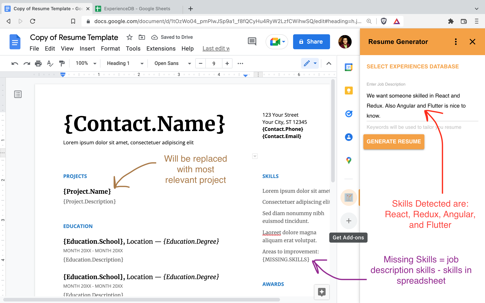
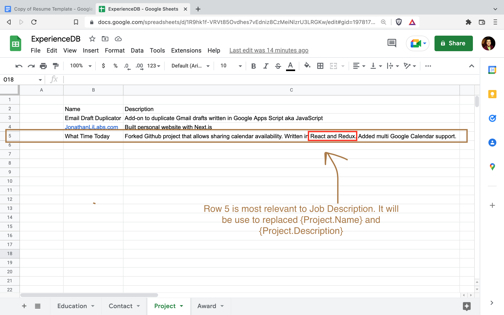
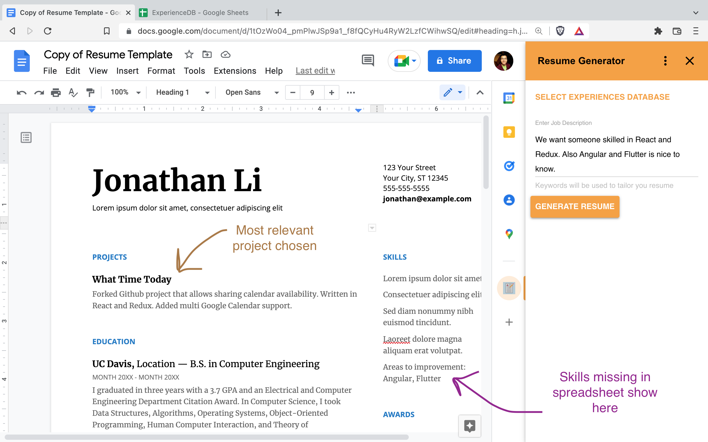

Resume Generator
Resume Generator is a Google Docs addon that helps generate tailored resumes. It is fast and easy. No technical skills required.
All you need is to open up a Google Doc Resume Template, select a Spreadsheet containing your experiences, input the job description, and click generate. The process is easy and straightforward.
As a job seeker you will find this add-on easy to use and save you tons of time.



Features
- Experiences are ranked based on how closely they match job description. The most relevant experiences are selected first to be placed into resume template
- Write the experiences spreadsheet and resume template once, and generate resumes in one click thereafter
- Collaborate with others on wording your experiences and designing your resume template since Google Sheets and Google Docs are easily sharable
Pricing
- No ads
- No subscriptions
- No tracking
- No data sharing with anyone
Privacy Policy
Resume Generator requires access to certain scopes to work. Documents scope will be used to access current active document which is the Resume Template. Drive read-only scope will be used to select Experiences Database spreadsheet from Google Drive using Google Picker. Script Container UI scope will be used to display UI alerts when the ExperiencesDB spreadsheet is not selected or when the spreadsheet is no longer valid (such as when it has been deleted by the user). Spreadsheets scope will be used to read data from the Experience DB spreadsheet. Additionally, Resume Generator uses the Google Apps Script Properties service to cache the ExperienceDB spreadsheet id so that users do not have to reselect the spreadsheet each time they close and reopen open Google Docs.
Resume Generator's use and transfer to any other app of information received from Google APIs will adhere to Google API Services User Data Policy, including the Limited Use Requirements.
Terms of Service
Use Resume Generator responsibly. The creator of this Google Doc add-on shall not be liable for what you do with this add-on. Keep in mind that Google has a daily cap on the number of times you can run the add-on. Refrain from spamming your resume to people if you do not take the time to fill out the Experiences Google Sheet well. Your tailored resume is only as good as the best experiences you put in the Experiences Google Sheet.
Skill Matching Algorithm
Two regular expressions are used to match skills in the job description.
The first one /(?<=\W)[A-Z][\+#]*(?=$|\W)/g. It says to match a single letter followed by zero or more pluses or sharps. This is targets skills such as R, C++, and C#.
The second one is /(?<!(^|\. ))(?<=\W)(\w?[A-Z]\w+ ?)+/g;. It matches one or more words that start with a capital letter such as Golang, MySQL, or "Manufacturing Engineering". It also matches if the first letter is lowercase followed by a capital letter such as jQuery. It does not match if the word starts a new line or begins a sentence. For example it will not match Ideal, Excellent, Knows, and Demonstrates in
Ideal candidate qualities:
Excellent communication skills. Knows grammar.
Demonstrates willingness to learn.